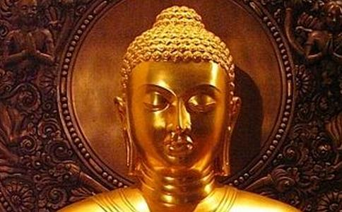

这个故事出自《出曜经》卷十二
舍卫城中，有一位长者名叫最胜。家中非常富裕，但是为人悭贪。不管任何人，只要前来乞讨，他一定不由分说地将其赶走。
为了防止盗贼宵小，他设计了七重坚固的大铜门来维护安全。同时，又用小石块混泥作墙，用铁笼覆盖屋顶，来防止鼠类或飞鸟的入侵。
这一天，
阿难立刻至长者家中托钵，并为其
长者由于悭吝的习气十分坚固，就很狡诈的说：“不知道今天您已经有斋主供养，还是要继续乞食？”阿难回答：“正要去乞食。”长者说：“既然如此，太阳已经快到正午了，希望您别错过了时间。”此时阿难摇摇头，苦笑了一下，只得回去禀告佛陀：“这位悭贪长者的习气实在太坚固了，并不是弟子的
于是
此时佛陀以
最胜长者看到佛陀稀有的相好庄严，心生
此时佛陀以
长者好奇的问：“请问是哪五种功德？”
佛陀说：“第一种布施就是不
长者心想：“人们会杀生，都是由于贫贱所造成。现在我家中财宝丰饶，当然可以不杀。这道理真好，我应该信顺。”便发愿道：“我最胜，愿尽形寿不犯杀生的过失！”此时，佛陀又陆续为他开示以慈悲心持不偷盗、不邪淫、不妄语、不饮酒的功德，可以心无恐惧。
长者听了十分欢喜，发愿遵从世尊的开示，永不违犯。
此时，长者满心欢喜的想：“佛陀开示这么精妙的道理，我应该要表示一点心意，来报答他的恩惠。”
于是，长者亲自到藏宝库房选择要供养佛陀的财宝。
由于无始劫来的悭吝习气，他想挑一些次级品来供养。说也奇怪，拿了十几次，每次伸手都拿到最珍贵的上妙宝物。
这时，长者感到心烦意乱，不知该如何是好。原来长者的布施念头和悭贪念头同时竞涌，心中的
佛陀观察到这个现象，便以梵音说偈来提醒他：“施与斗共集，此业智不处，施时非斗时，速施何为疑。”
最胜长者听到如来所说的偈语。内心十分惭愧，咬牙下定决心取得上好的珍宝，拿至佛前，长跪忏悔，仰望佛陀慈悲目光的注视，长者不禁失声痛哭。
这时佛陀开始为长者开示更微妙的布施、持戒、修福的道理，及如何超脱欲界种种有漏、不净的方法。
长者听了，双腿盘坐，细心思惟，起一念相应慧，内心立刻远离诸烦恼尘垢，证得
他立刻起身至诚顶礼，并发愿成为优婆塞，尽形寿受持
于是，佛陀慈悲为他授
就在佛陀离开不久，魔王波旬变化成具三十二相、八十种好的佛陀形象，来到长者家中，身上放出七尺的紫磨金色圆光。
长者心中不禁纳闷，不知佛陀为何才刚回去又折返？但他仍恭敬地顶礼佛足。
此时假佛陀说：“我原以为长者的智慧渊博，能明辨真理。所以刚才说了一些似是而非的理论，想考考你。现在要向你更正，之前所说的
长者一听，立刻发现此时站在眼前的并不是佛陀，便不假思索地回答：“住口！我已经从佛陀的开示中得到正知见，你这个邪魔，即使你再变化成任何的形象，要想让我从正道中退转，也是不可能的。以你小小的神通要和佛陀相比，只是以萤火之光想敌太阳的光明，以田间的小土丘要和须弥山竞高，那是
魔王听了，发现无计可施，只得无奈地离开。
故事解析：
最胜长者因为佛陀的威德，降服了自己的慢心，也借着一念真诚地忏悔心，化除了悭垢，而开启了
因为对正知见坚定的信心与忍可，对于外来的魔考，心中毫不动摇。
什么是魔？无论是顺己意的一念贪心，还是违逆己意的一念嗔心，都考验着我们对
然而，只要心念时时安住在佛法上，自能信念坚如磐石，再大的境界风，也能不动不摇。